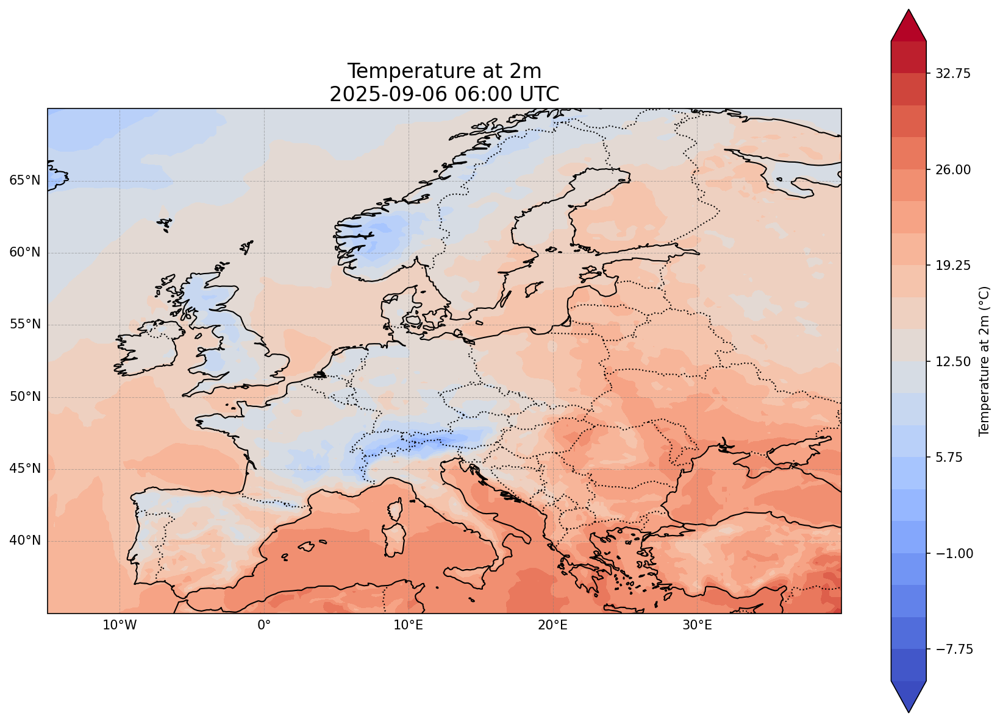

Weather Data Pipeline
Introduction
This project is a classic example of an ETL (Extract, Transform, Load) pipeline:
- Extract: The data_ingestion scripts connect to external weather data sources and download the raw weather forecast data (GRIB or NetCDF files).
- Transform: The data_processing scripts take the raw data, select the necessary parameters, calculate new variables, and convert it into an optimized format (zarr or duckdb).
- Load: The final, processed data is loaded into a storage system (data/processed_data/) where it can be accessed by the visualization scripts to generate maps.
Parameter Selection for Operational and GNSS Applications
For this prototype, we’ve focused on three key atmospheric variables:
Precipitation: Essential for agriculture, flood forecasting, and general public safety.
Cloud Cover: Critical for the solar energy sector, aviation, and temperature forecasting.
Wind: A key parameter for aviation, shipping, wind power generation, and structural engineering.
GNSS Applications Overview
Tropospheric Delay Correction: The troposphere delays GNSS signals, introducing errors in positioning. Weather models provide the necessary data (temperature, pressure, and humidity) to accurately model this delay and correct for it.
Precipitable Water Vapor (PWV): The tropospheric delay is closely related to the amount of water vapor in the atmosphere (PWV). Near real-time PWV estimates, are valuable for both GNSS correction and severe weather forecasting.
Data Sources
- Global Model: GFS (Global Forecast System)
- Chosen for its global coverage, free availability, and frequent updates (every 6 hours).
- Provides a large-scale context for weather patterns.
- Regional Model: MET (Norwegian Meteorological Institute)
- Covers Northern Europe, including Scandinavia and Latvia, providing high-resolution local detail.
- Offers more accurate forecasts for the region of interest.
Pipeline Architecture
The pipeline is designed as a modular, automated system:
- Orchestration:
- A shell script (
scr/run_pipeline.sh) serves as the main entry point. - It can run in
scheduler,dashboard,manual, ordefaultmodes. - The scheduler mode runs the pipeline every 6 hours, fetching the latest data.
orchestration/pipeline_scheduler.pyis the core script that coordinates the pipeline’s execution.
- A shell script (
- Data Ingestion:
data_ingestion/gfs_downloader.pyanddata_ingestion/met_downloader.pyhandle the download of GFS and MET data, respectively.
- Data Processing:
data_processing/process_data.pyanddata_processing/process_met_data.pyprocess the raw data into a usable format (zarr or duckdb).data_processing/calculate_wind_gust.pyimplements a simplified wind gust calculation.
- Visualization:
visualization/create_visualizations.pyandvisualization/create_met_visualizations.pygenerate static visualizations.visualization/run_dashboard.pylaunches an interactive dashboard built with Python Dash.
Static Visual Outputs
- Static Maps:
- Time-stepped maps are generated for key parameters (precipitation, cloud cover, wind).
- These provide a clear, at-a-glance view of the weather forecast.
Interactive Visual Outputs
- Interactive Dashboard:
- A Python Dash application (
interactive_dashboard.py) allows for interactive exploration of the data. - Users can likely select different parameters, time steps, and regions to visualize.
- A Python Dash application (
Example static maps: Temperature
Temperature map snapshot
Example static maps: Wind

Wind map snapshot
Reasoning and Trade-offs for Data
- Choice of GFS:
- Reasoning: Global coverage, no cost, and frequent updates make it ideal for a prototype.
- Trade-off: Lower resolution compared to other models like ECMWF.
- Choice of MET:
- Reasoning: Provides high-resolution data for the specific region of interest (Northern Europe).
- Trade-off: Limited geographical coverage.
Reasoning and Trade-offs for Pipeline
- Pipeline Automation:
- Reasoning: The scheduler ensures that the data is always up-to-date without manual intervention.
- Trade-off: Requires a persistent process to be running.
- Interactive Dashboard:
- Reasoning: Provides a much richer user experience and allows for deeper exploration of the data.
- Trade-off: More complex to develop and maintain than static visualizations.
Operationalizing the Pipeline 1
To move this pipeline from a manual process to a reliable, automated service, we can implement modern DevOps practices.
- Containerization with Docker:
- A
Dockerfilecan be created to package the entire application—including all dependencies, scripts, and configurations—into a portable container image. - Benefits: Ensures the pipeline runs consistently across any environment (development, testing, production) and simplifies deployment.
- A
Operationalizing the Pipeline 2
- CI/CD with GitHub Actions:
- Continuous Integration (CI): An automated workflow can be set up to run tests (
pytest) on every push or pull request. This catches bugs early and maintains code quality. - Continuous Deployment (CD): On a successful merge to the main branch, a GitHub Action can automatically:
- Build the Docker image and push to a container registry (e.g., Docker Hub, GitHub Container Registry).
- Deploy the new image to a cloud service for execution.
- Continuous Integration (CI): An automated workflow can be set up to run tests (
Possible extensions for data sources
Include IFS: The ECMFWF model is widely regarded as the most reliable for the medium range scale.
Include a validation pipeline: Currently the scripts only download data and plot them, but in order to validate the simulations one would need to also include a proper model verification.
Include ensemble data: all current operational models provide an ensemble. In this case we are only downloading the deterministic version of GFS, and a post-processed version of the MET Norway model.
Download observational data: needed to do the validation of the simulations.